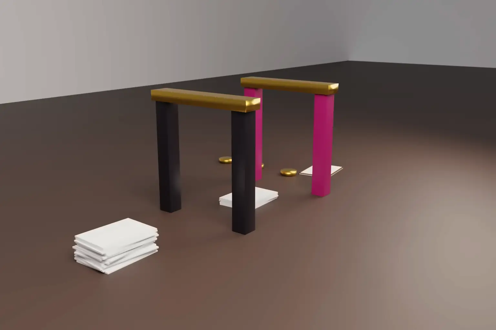

Who decides IPR institution at the USPTO now? From 16 November 2026, a three judge panel of the Patent Trial and Appeal Board (PTAB) again decides the merits stage for the Director. The Director still screens every inter partes review (IPR) and post grant review (PGR) petition on discretionary grounds first. The change comes from a memorandum dated 10 November 2026, signed by Director John A. Squires with the concurrence of General Counsel John F. Duffy.
The memorandum also tells panels how to apply the institution standard. A petition that fails for a "substantial majority of the challenged claims" will be denied. Where the evidence on a claim is evenly balanced, the petitioner loses on that claim. For companies that rely on IPR as a cheaper alternative to litigation, the institution process is changing.
- The Director keeps the first, discretionary review. Petitions that pass it go to a three judge PTAB panel for the merits decision.
- If review is instituted, a different panel conducts the trial. No judge from the institution panel sits on it.
- A petitioner must show how the prior art discloses or renders obvious each limitation of each challenged claim. Pointing to the examiner's findings is not enough.
- Institution will be denied if the petition fails for a substantial majority of the challenged claims. Evenly balanced evidence counts against the petitioner on that claim.
- India and the EPO have no comparable screening stage for oppositions. A properly filed opposition is heard on its merits.
What changed on 16 November 2026
The memorandum partly replaces the Director Institution Memorandum of 17 October 2025. Under that earlier memorandum, the Director decided institution on all grounds, discretionary and merits alike. The memorandum describes the new process as an evolution of the Interim Processes for PTAB Workload Management memorandum of 26 March 2025.
The new process works in two steps. First, the Director reviews considerations that do not involve the merits, such as the discretionary factors. The Director may deny institution by written decision or by summary notice. Second, a petition that survives is referred to a three judge panel. That panel decides institution on the merits, acting for the Director.
The change applies to every IPR and PGR in which no notice referring it for merits review has yet been entered. Briefing on discretionary and merits issues is unchanged. The Director also keeps the statutory power to grant or deny institution in any case.
The memorandum gives the reason for the change. Over the past year the Director made more than 325 institution decisions that involved the merits, with PTAB judges preparing recommendations. In June 2025, about 60% of petitions were denied on discretionary grounds. In September 2026, the figure was 15%, and 85% of petitions were referred for merits review.
The five guidelines PTAB panels must apply
1. Claim by claim mapping. For any prior art ground, the petitioner must "point out how the prior art discloses or renders obvious each limitation of each challenged claim". It must identify the particular passages relied on. Merely citing an examiner's findings does not meet 37 C.F.R. §§ 42.104(b)(4) and 42.204(b)(4).
2. Substantial majority of claims. If the petitioner does not make the required showing for a substantial majority of the challenged claims, the panel will deny institution. The memorandum relies on earlier Director decisions and two informative PTAB decisions from 2018 and 2019.
3 and 4. Arguments from either side. The patent owner's preliminary response may argue that the petition fails for a substantial majority of claims. If that argument is reasonable and well supported by reliable, credible evidence, the panel will deny institution. It will also deny where the panel itself reaches that view on reliable, credible evidence.
5. Evenly balanced evidence. If the arguments for and against unpatentability of a claim are both reasonably supported, the evidence is in equipoise. For that claim, the petitioner is treated as not meeting the "reasonable likelihood" standard for IPR. The same applies to the "more likely than not" standard for PGR.
The memorandum ties these rules to two points of law. Under 35 U.S.C. §§ 314(a) and 324(a), at least one challenged claim must meet the statutory threshold. Under SAS Institute v Iancu, 584 U.S. 357 (2018), the USPTO must institute on all claims or none. The memorandum also compares the reasonable likelihood test with the test for a preliminary injunction. In that setting a "substantial question" of validity raised by the other side is enough to defeat the motion.
What the memorandum does not change
- It is guidance to PTAB judges, not a rule made after notice and comment. It can be changed or withdrawn by a later Director.
- It does not move the discretionary factors, such as settled expectations, parallel litigation or prior challenges. These stay with the Director. We explained them in our note on IPR discretionary denial and settled expectations.
- It does not change the standard at trial. Once a trial is instituted, the petitioner must still prove unpatentability by a preponderance of the evidence under 35 U.S.C. § 316(e).
- It does not change the statutory time limits, such as the one year bar under 35 U.S.C. § 315(b) after service of an infringement complaint.
- It does not affect ex parte reexamination, which follows its own standard.
How this compares with India and Europe
India. Under Section 25(2) of the Patents Act, 1970, any person interested may file a post grant opposition. The deadline is one year from publication of the grant. An Opposition Board examines the opposition and makes a recommendation, and the Controller decides after a hearing. There is no threshold stage at which the Controller may refuse to examine a properly filed opposition. Revocation under Section 64 is also available before the High Court, or as a counterclaim in an infringement suit.
European Patent Office. Any person may oppose a European patent within nine months of publication of the mention of grant, under Article 99(1) EPC. The notice of opposition must state the grounds and the supporting facts and evidence, under Rule 76 EPC. An admissible opposition proceeds to examination on its merits. There is no screening stage like the PTAB institution decision.
Unified Patent Court. A revocation action can be filed against a European patent with unitary effect, or a non opted out European patent, at the central division. The court decides the action after written and oral procedure, with no separate institution stage.
The gap matters in practice. In India and Europe, a challenger with a reasonable case is heard. In the US, a challenger must pass a discretionary review and then a merits review before any trial begins.
| Forum | Deadline | Screening before merits? |
|---|---|---|
| India: post grant opposition, s.25(2) | One year from publication of grant | No. Opposition Board then Controller |
| EPO opposition, Art. 99(1) EPC | Nine months from mention of grant | No. Admissible oppositions are examined |
| Unified Patent Court revocation | No separate institution stage | No |
| USPTO: IPR or PGR | Statutory time limits, such as the one year bar under 35 U.S.C. § 315(b) | Yes. Director's discretionary review, then PTAB merits review |
Practical steps
- Petitioners should challenge fewer claims and choose the claims where the art is strongest. A petition that is weak on most claims now risks denial in full.
- Petitioners should map every limitation of every challenged claim to specific passages in the prior art. Expert evidence should address the patent owner's likely counter arguments, because evenly balanced evidence now counts against the petitioner.
- Patent owners should use the preliminary response to show, claim by claim, a reasonable and well supported reason why the petition fails. Aim at the substantial majority of claims, not only the broadest claim.
- Indian and other foreign companies sued in the US should plan for a district court invalidity case alongside any IPR. They should also watch the one year bar under 35 U.S.C. § 315(b).
- Applicants filing in the US should draft dependent claims with distinct fallback features. A well layered claim set makes a substantial majority challenge harder.
We prepare US claim strategies and coordinate validity work for clients in India and abroad. See our international patent support and our guide for foreign applicants filing in India.
Frequently asked questions
Who decides IPR institution at the USPTO from November 2026?
The Director first decides whether to deny a petition on discretionary grounds. Petitions that pass go to a three judge PTAB panel, which decides institution on the merits on the Director's behalf. A different panel conducts any trial.
What does "substantial majority of the challenged claims" mean for an IPR petition?
The PTAB will deny institution if the petition does not meet the reasonable likelihood standard for a substantial majority of the claims it challenges. For PGR the standard is more likely than not. The memorandum does not set a percentage. Petitioners should therefore challenge only the claims they can support well.
Does India have an equivalent to IPR institution?
No. A post grant opposition under Section 25(2) is examined by an Opposition Board and decided by the Controller. There is no screening stage that can refuse a properly filed opposition before it is examined.